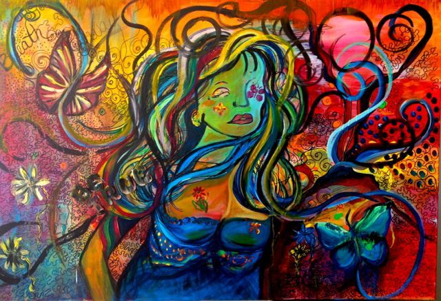

Mu’adh ibn Jabal reported: The Prophet, peace and blessings be upon him, said, “Allah looks down at his creation on the middle night of Sha’ban and he forgive all of his creatures, except for an idolater or one harboring hatred.”
Ṣaḥīḥ Ibn Ḥibbān 5782
SHORT STORY
"Dragon of Day and Night"
The day had arrived. Brodek, the young dragon would have to choose his side, and become either a dragon of light or a dragon of darkness. Both groups, natural enemies, hated each other to death, and each dragon, when its time came, had to choose one side and join its army.
Nearly all dragons decided while they were still young, and trained for years before the big change. But Brodek was undecided. And now time had run out. At dawn, his wings would be covered with the dark blue of night or the gold of the sun, and so they would remain forever, and everything would be hatred for the sun or for the moon, without remedy. This was the price of the magic and terrible gift of breathing fire.
Because of all this, Brodek went to the forest to think, where he hoped to find an answer. But there, sitting in the silence of the night, there were no answers. Just a beautiful white full moon, with pale silver shimmer. And the wind in the leaves of the trees was softer and cooler than usual, as if saying farewell to the young dragon. And night, a deep night full of distant stars ...
For nothing in the World did Brodek want to become a dragon of light in order to hate all that wonder, and he felt his wings slowly begin to dye into the colour of the night.
But the night was losing its strength and making way for the first light of dawn. It was one of Brodek's favourite times of day, and he enjoyed the pink tones of the sky, the gentle heat of the first ray of sun on his face, the glinting crystal and fire shining on the waters, and the joy that was awaking in the woods with the first birdsong ...
No, neither did he want to be a dragon of the night and have to hate such beauty.
And before tears flooded his eyes, before even knowing the final colour of his wings, Brodek flew to the lake, dove in as deep as he could to quench his thirst for peace, and then turned and flew up into the sky, as high as he could, as if trying to escape from the unjust land and his cruel fate. And when he had flown so high that the cold prevented him from moving his wings, he opened his mouth to spit out a great flame, as if to spend it completely, to never have it again.
But instead of fire, from his mouth came a thin layer of frost that covered the fields below, as if his desire for peace and the lake water had worked a miracle. And only then did he discover that he wouldn't be a dragon of the darkness, and neither would he be a dragon of the light, since now one of his wings belonged to the moon, and the other to the sun.
And every so often, Brodek again decorates the fields with his magical frosty breath, as if to remind the World that it is not necessary to choose between day and night when you really don't know how to hate.
ART

×
Hate
My enemy came nigh,
And I
Stared fiercely in his face.
My lips went writhing back in a grimace,
And stern I watched him with a narrow eye.
Then, as I turned away, my enemy,
That bitter heart and savage, said to me :
"Some day, when this is past,
When all the arrows that we have are cast,
We may ask one another why we hate,
And fail to find a story to relate.
It may seem then to us a mystery
That we should hate each other."
Thus said he,
And did not turn away,
Waiting to hear what I might have to say
FLOWER OF HATRED
Orange Lilies "Lilium bulbiferum"
Lilies are considered a beautiful, popular flower but the orange variations actually symbolize hatred, pride, and disdain.
HOW TO GET RID OF HATRED
Hatred is a relatively stable feeling of intense dislike for another person, entity, or group. Hatred is distinct from short-lived feelings such as anger and disgust. While some forms of animosity may only manifest briefly and mildly, hatred is a form of active, ongoing hostility that often uses up significant emotional energy. When someone feels hatred for another person, they often spend much of their time fixating on their anger, contempt, or dislike of the other person.
WHY DO PEOPLE HATE?
Hate is part of the range of human emotions. Some researchers believe all people have the capacity to hate, while others believe true hatred is uncommon. What does seem clear is that hatred tends to emerge as a learned emotion that flourishes in the absence of compassion.
Feelings of hatred or intense emotional dislike develop for many reasons. People might begin to hate another person or group when they:
Feel envy or want what the other person has. They may consider it unfair that someone has what they lack.
Have contempt for another person or believe them to be inferior.
Learn hatred from parents, their community, or other social groups.
Are humiliated or mistreated by another person.
People also hate when they feel powerless. Rather than turning their anxiety and shame inward, they may project that negativity onto an external target. In some cases, people who experience bullying or abuse may grow to hate the person who harmed them.
In other cases, a target is hated more for what they represent than for specific actions they have taken. Individuals may believe the target of their hatred has harmful intentions toward them and would hurt them if they could. However, the target may not necessarily have hostile intentions, or the hatred may be disproportional to the injury.
For example, a student may hate a teacher who failed them in a class. The teacher may not have any hostility for the student and could simply be doing their job. However, the student may use the teacher as a stand-in for their frustration with academia as a whole. This hatred may prompt the student to try and harm the teacher, perhaps by spreading false rumors or sending a vicious email.
HATRED AND DEHUMANIZATION
Studies on hatred suggest it tends to persist. Prolonged hatred may lead to a desire for revenge or preemptive action against a perceived threat. Some people harbor hatred for others but never act on it. Others become energized by hate and express their feelings through violent acts.
Feelings of hatred that develop toward certain a certain individual may eventually be redirected toward the entire group that person belongs to. This can lead to dehumanization of individuals or groups. Dehumanization is the act of seeing a person as inferior, uncivilized, or less than human.
Dehumanization research suggests that when people see others as less than human, empathy centers in the brain deactivate. For example, people who commit mass violence, cruelty, or hate crimes often rationalize these actions by comparing the victims to animals. Individuals who would typically balk at murdering another person may find it easier to kill a “subhuman” enemy.
HOW TO COPE WHEN YOU ARE HATED
Coping with hatred can be difficult, especially when there’s no apparent cause for the hatred. You may wonder how someone can have such deep, negative feelings toward you. Believing someone hates you can affect your mood, mental health, and self-esteem.
Remember that people make mistakes. Someone you’ve hurt won’t always be able to forgive you. However, if you regret the action, consider how to learn and grow from what happened so that you don’t hurt anyone else.If someone hates you because they feel wronged by you, it’s possible you want to reach out to them. You may wish to discuss their feelings, apologize, or make the situation clear. This could help when someone is merely angry with you, but when it comes to hatred, it may be difficult to have a calm, rational discussion with the other person.
Taking a trusted friend or loved one with you can help. Getting advice from someone unbiased (like a licensed counselor) can also help put the situation in perspective. Depending on the circumstances, it may be best not to engage the other person.
If a coworker’s hatred for you affects your performance at work or even causes difficulties outside of work, Human Resources can give you advice or direct you to workplace resources.
When you’ve been threatened, or even if you just feel unsafe, you may want to seek advice from law enforcement. If you’re working with a therapist, it may help to start by talking through the situation openly in a therapy session. Your therapist can help you explore helpful solutions and offer support.
SELF-HATRED
Internalized hatred can cause significant harm. In some cases, internalized self-hatred results from experiencing prejudice (racism, sexism, ableism, homophobia, etc.). Negative beliefs become a part of your internal experience, leading you to judge and criticize yourself according to the stereotypes society assigns you.
Self-hatred can also result from mistakes you’ve made. If you’ve hurt a loved one and lost a close relationship as a result, you may feel painful regret. You may also come to develop hatred toward yourself.
Many people judge themselves harshly, especially when feeling guilty for something they’ve done. If forgiveness from your loved one isn’t possible, or if you’re afraid to seek it, your feelings may intensify. Self-hatred can contribute to depression. It could also factor into self-harm or other attempts to punish the self.
Remember that people make mistakes. Someone you’ve hurt won’t always be able to forgive you. However, if you regret the action, consider how to learn and grow from what happened so that you don’t hurt anyone else. Just as compassion is the key to overcoming hatred, self-compassion can help heal self-hatred.
Developing self-compassion isn’t always easy. A compassionate counselor can help without judging you for any mistakes you may have made in the past. Therapy can help you find support and healing for all types of hatred.